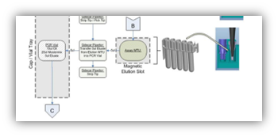
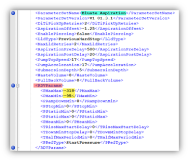
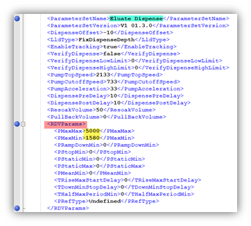
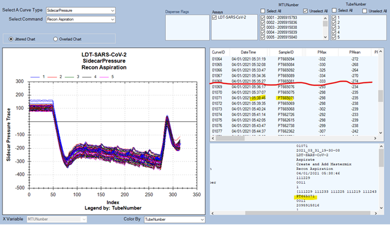
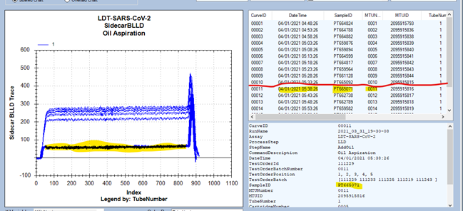
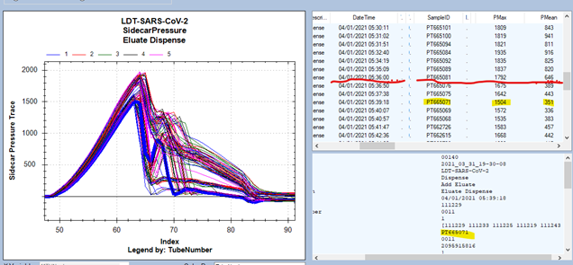
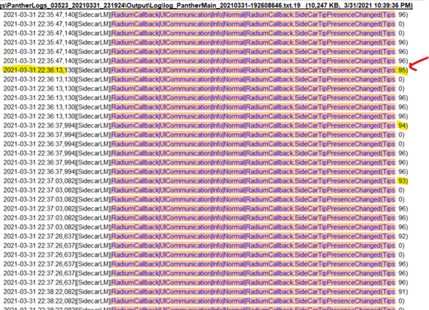
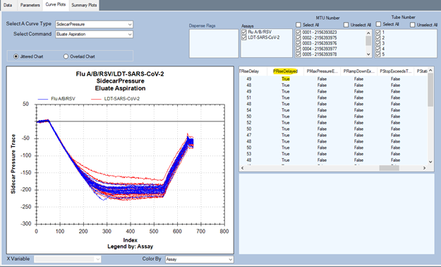
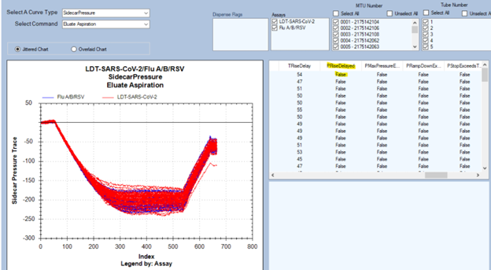

RDFSE
RDV 512 and no RDV code.
RDFSE – Reagent Dispense Failure Sample Eluate, same flag for Aspiration failure (e.g., no RAFSE flag).
RDV 512 = Failure code, Pmaxmin not met (see MDD_FW_APP or CDD_… Aspirate and Dispense Analysis).
RDFSE will occur at either:
-
Aspirate from MTU at magnetic elution slot 0 or 1 (no RAFSE flag).
-
Dispense into vial at cap and vial station.

RDV codes used and thresholds:
-
Eluate Aspirate*
- PMaxMax = RDV 2 (Pmax < approx. -320)
- PMaxMin = RDV 512 (Pmax > approx. -95)
-
Eluate dispense*
- PMaxMax = RDV 2 (Pmax > 5000)
- PMaxMin = RDV 512 (Pmax < 1580)
See corresponding sequence file: C:\Panther\Software\PC\Bin\Input.
Example, Flu_A_B_RSV:
CurveID: 00141
RunName: 2021_01_13_08-50-25
Assay: Paraflu
ProcessStep: Dispense
StepName: Add Eluate
CommandDescription: Eluate Dispense
DateTime: 01/13/2021 20:08:49
TestOrderId: 112
TestOrderBatchNumber: 0013
TestOrderPosition: 4
TestOrderBatch: [104 109 111 112 113 ]
SampleID: UNVPANELA-284253
MTUNumber: 0003
MTUID: 1946981055
TubeNumber: 5


Fusion pipettor does the following (to audit pipettor moves, inspect Sidecar Aspiration curve, sorting by TO, and checking timestamps):
-
Aspirate oil from pack and dispense in vial.
-
Aspirate recon from pack, dispense in cartridge, mix (aspirate/dispense) in cartridge, final aspiration in cartridge, dispense in vial.
-
Aspirate sample eluate from MTU, and dispense in vial.
-
Repeat for each tube in MTU.
RDFSE with RDV code example:
Failure mode from message report – first error with timestamp (local time):
03/31/2021 22:39:18 Warning 283.000.00001 Invalidated Sample ID PT665071 for LDT-SARS-CoV-2 assay in lane 4 position 6 due to RDFSE flag. Sample will need to be retested.
RDFSE points us to inspect curve data using SidecarPressure curve file.
Using Curve Trend, and sorting Pmax, eluate dispense Pmax (1491) is less than Pmaxmin (1580) threshold parameter from sequence file.
CartridgeNumber: 0006
CartridgeBarcode: 1035028247415042201226
CardWell: 3
JobID 47:
TCBankPos: 3
PMax: 1491
PMean: 338
PRampDownMin: 50
PRef 212:
PStatic: -73
PStop: -74
...
As RDFSE is typically related to tip issue, it will be good to see if this coincides with tip tray change.
Using Sidecar Pressure Curve file, tracking sample PT665071 and around this time frame.
Message report (local time): 03/31/2021 22:39:18
Time in curve data files is in UTC.
Adjusting for this customer’s timezone (-7 UTC), 04/01/2021 05:39:18…
Quick inspection around this time period.
- Figure 1. Recon buffer appears in range of other aspirations, inspecting PMax values drops suddenly by about 10%.
- Figure 2. Oil blld is much lower than prior level senses.
- Figure 3. Eluate dispense Pmax also drops noticeably.
- Figure 4. Inspecting tip usage data.
Resolution:
Tip consumable related, try new tip tray or try another tip lot.

Figure 1. Pmax drops from -330 range to -300 range.

Figure 2. Blld pressure before oil is detected has much lower flow resistance.

Figure 3. Pmax drops from around 1800 down to 1600.

Figure 4. Coincides with tip tray change.
RDFSE with no RDV code example:
Issue:
Message report indicated RDFSE with no RDV error occurring on all samples for two different assay types after replacing APP with BLDC pipettor.
Inspection of Pmax of eluate aspiration and dispense, no PMax values outside RDV parameter threshold.
Verified teaching of Fusion pipettor was centered over dimple at teach point.
Verified meshing of pipettor to z-motor.
Looking more closely at curve data shows PRiseDelayed = True(Figure 5) , indicating the process control was outside acceptable limits. (Note: sequence file indicates this process should not be enabled)
Inspected FW version was up to date, but par.135 = 1
2022-01-07 13:41:36,011|[SC StartupManager]|SidecarFwHwVersion|SWConfiguration|Info|Normal|FW Version VersionItem module:[RobotArm;0xFD;0x05], version:01.0109.1 6319 APE Airpip-EC, serial:68, article:1 completed
2022-01-07 13:41:36,370|[SC StartupManager]|SidecarParameterManager|SidecarMA|Info|Normal|SCFWP: PipettorSystem[FD][05]: 135: next index: 136, type SignedIntParameter DefaultValue 1 Value 1
How this occurred:
If either of the following messages occur during instrument setup, repeat instrument setup again:
Resolution:
Run instrument setup again, and verify par.135 = -16127. Verify PRiseDelayed issue was resolved (Figure 6).
2022-01-11 17:51:25,097|[SC StartupManager]|SidecarFwHwVersion|SWConfiguration|Info|Normal|FW Version VersionItem module:[RobotArm;0xFD;0x05], version:01.0109.1 6319 APE Airpip-EC, serial:100, article:1 completed
2022-01-11 17:51:25,462|[SC StartupManager]|SidecarParameterManager|SidecarMA|Info|Normal|SCFWP: PipettorSystem[FD][05]: 135: next index: 136, type SignedIntParameter DefaultValue 1 Value -16127

Figure 5. BLDC pipettor Prisedelayed.

 button at the top of the page to send feedback, comments, or change requests.
button at the top of the page to send feedback, comments, or change requests.